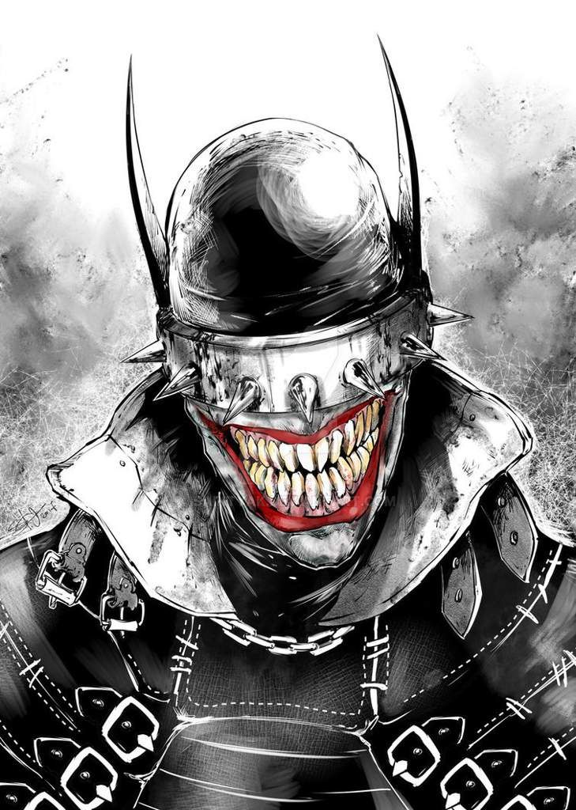
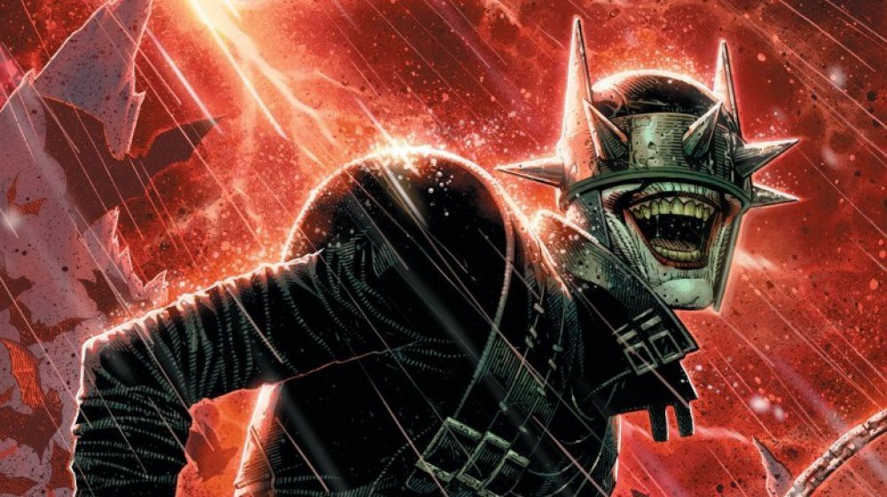
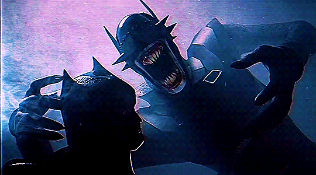

The Batman Who Laughs!!

To win, you need to adapt, and to adapt, you need to be able to laugh away all the restraints. Everything holding you back. You see... A Batman who laughs... is a Batman who always wins. HAHAHAHAHAHAHAHAHAHAHAHAHAHA! „
~ The Batman who Laughs
BATMAN LAUGHS!!!

Summary
On Earth -22, the Joker's insane rampage across Gotham City caused Batman to finally snap, breaking his long-held creed to never take a life, snapping the Clown Prince of Crime's neck to end the threat he posed once and for all. Unbeknownst to him, this released a special strain of Joker Venom that Batman inhaled, slowly twisting his moral fiber until he was no different from the Joker himself.
After slaughtering his own family and dismantling the entirety of the Justice League, he proceeded to wage war on all of creation, methodically killing every last man, woman, and child on Earth. Now known as The Batman Who Laughs, he serves as the favored lieutenant of Barbatos, seeking to plunge the entire multiverse into eternal darkness as he had done with his own world.
POWERS AND STATS THE BATMAN LAUGH

Tiering System: 9-A. 5-A with weaponry. Unknown with preparation time
Name: Bruce Wayne, Batman, The Batman Who Laughs
Origin: DC Comics
Gender: Male
Age: Unknown
Classification: Dark Knight, Denizen of the Dark Multiverse
Powers and Abilities: Superhuman Physical Characteristics, Weapon Mastery, Genius Intelligence, Preparation, Master Hand-to-Hand Combatant, Preparation, Reality Warping with Dark Metal Cards (The cards he distributed are able to fulfill the holder's desires, converting large sections of Gotham City into nightmarish forms of the preferred domains of Batman's greatest rogues), Mind Manipulation, Morality Manipulation, Death Manipulation, and Status Effect Inducement with Joker Venom. Resistance to Sleep Manipulation. Can breathe underwater.
Attack Potency: Small Building level (Traded blows with the main universe Batman and is biologically identical to him). Large Planet level with weaponry (Knocked out Wonder Woman with an Eight Metal gun). Unknown with preparation time (Possesses a guide on how to destroy the multiverse along with Multiversity, implied to have killed the "Wrath of God", better known as The Spectre, off-panel. However, the latter's power level varies to a massive degree from story to story)
Speed: At least Hypersonic (comparable to Batman)
Lifting Strength: Unknown
Striking Strength: Small Building Class
Durability: Small Building level (Took hits from both Batman and the Joker.)
Stamina: Superhuman
Range: Standard melee range normally, higher with gadgets
Standard Equipment: Dark Metal Cards, Joker venom, Eigth Metal gun, dual machine guns, Black Kryptonie, Batmobile, Dark Robins
Intelligence: Extraordinary Genius. As the Batman of Earth -22, The Batman Who Laughs' intellect is only matched by his fiendish cunning and pragmatic ruthlessness. Now completely unhinged and free of any moral fiber to dictate his choices, he was able to single-handedly wage war on the entire world, wiping out the entire Justice League with ease and is even implied to have killed cosmic entities like The Spectre in his rampage. As the most trusted lieutenant of Barbatos, he is privy to all of the evil god's plans, successfully playing the Justice League of Earth-0 for fools and causing them to do everything he needed to fulfill his goal of destroying the multiverse until they obtained the Tenth Metal. Aside from his terrifying intellect and stratagem, he retains his status as one of the finest hand-to-hand combatants on Earth, overwhelming his Prime Earth counterpart until the latter received help from his own version of the Joker.
The Batman Who Laughs